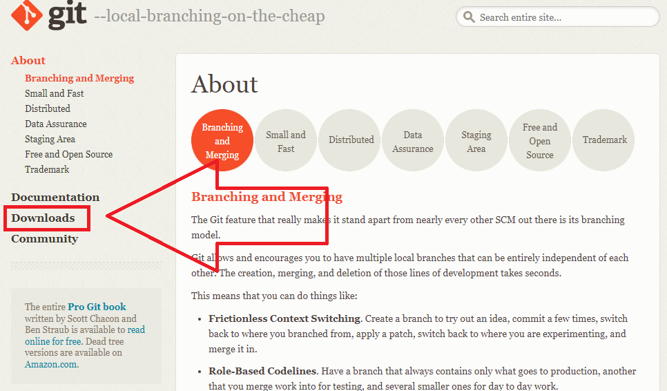
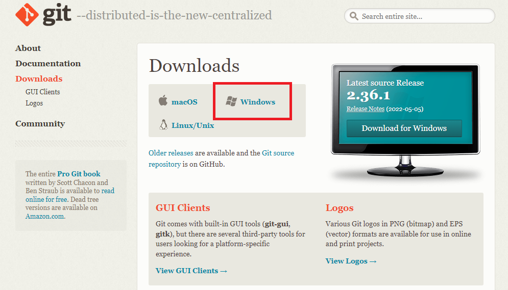
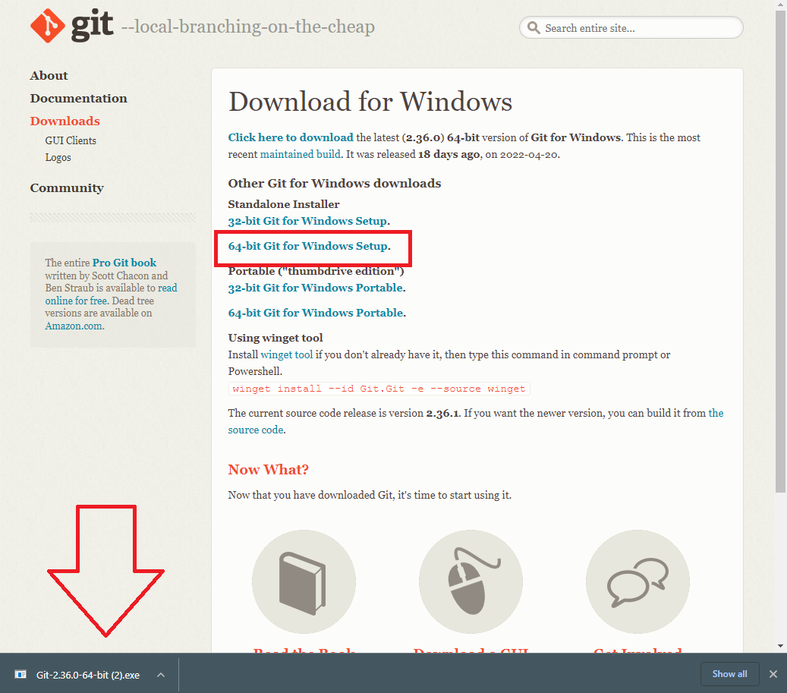
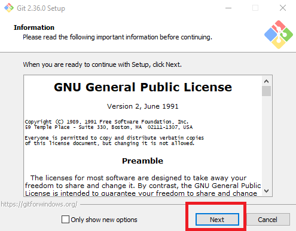
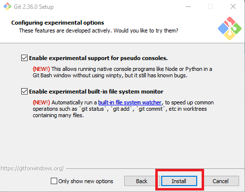

by Mark Carbajal
Today, we will learn how to install Git onto any Windows 10 Computer.
Git is a free and open source distributed version control system designed
to handle everything from small to
very large projects with speed and
efficiency.
Step 1: On the git website, navigate to the Downloads page

Step 2: Click on the windows tab

Step 3: Click on the 64 bit version.
Then, open the installation program once downloaded.

Step 4: Once opened, go through the installation, then click install.


Step 5: Once finished, Git has finished installing.
Congratulations! You now have Git installed and
can learn to use its functionalities!